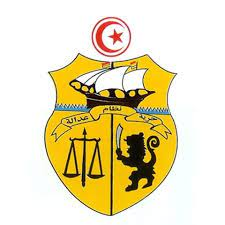
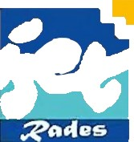
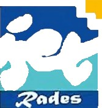

Republique tunisienne
inter metal
Institut Superieur des Etudes Technologiques

Rapport du stage d'initiation
Realise par :
Osama soudani
Classe:
1eres année technologie d'informatique
Encadrent : Mr. Khalled Warteni